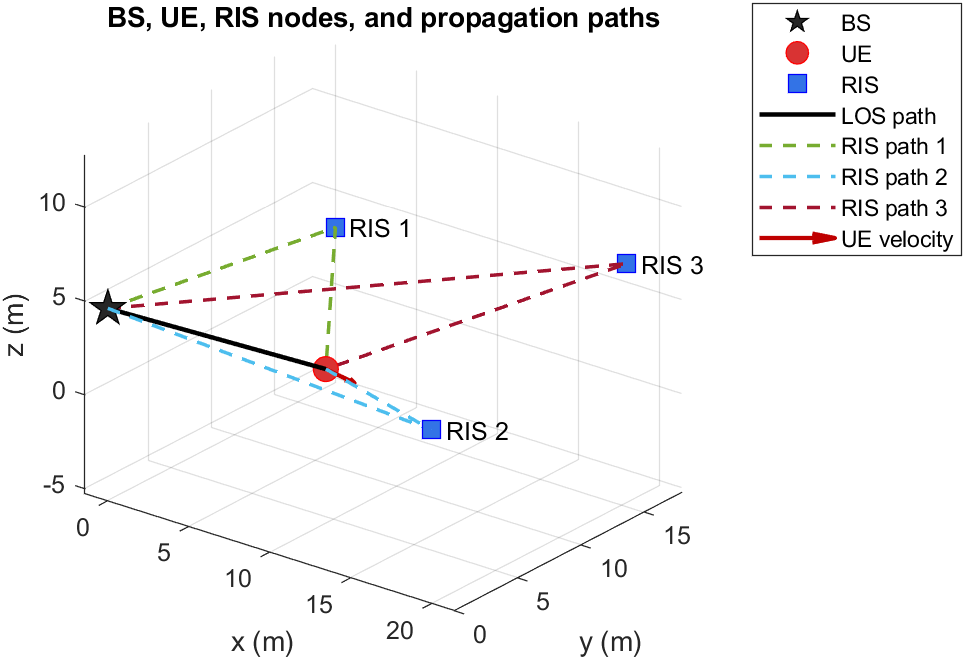
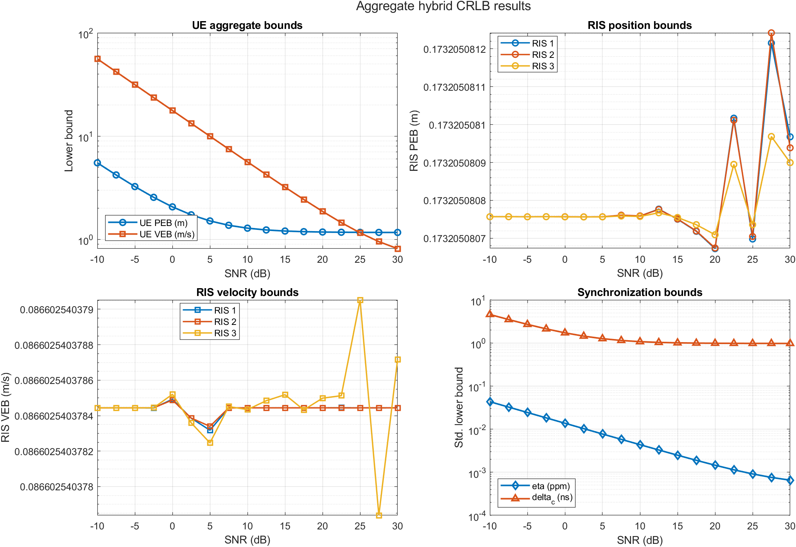
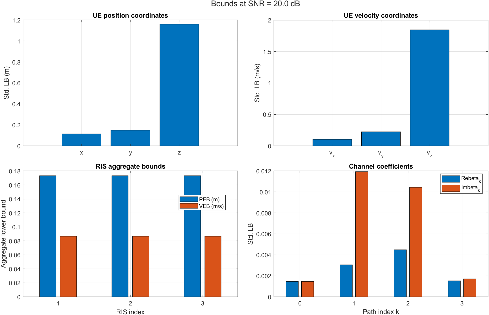
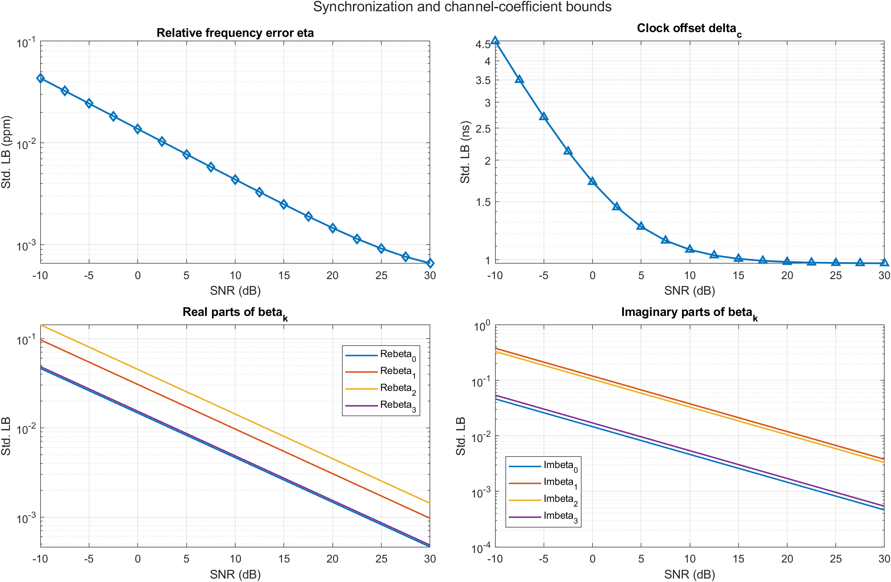
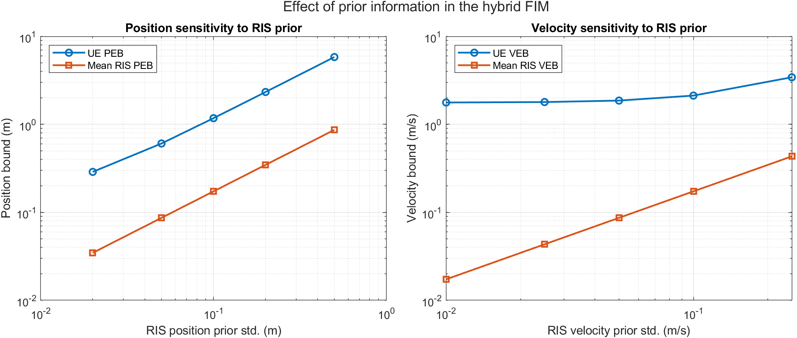
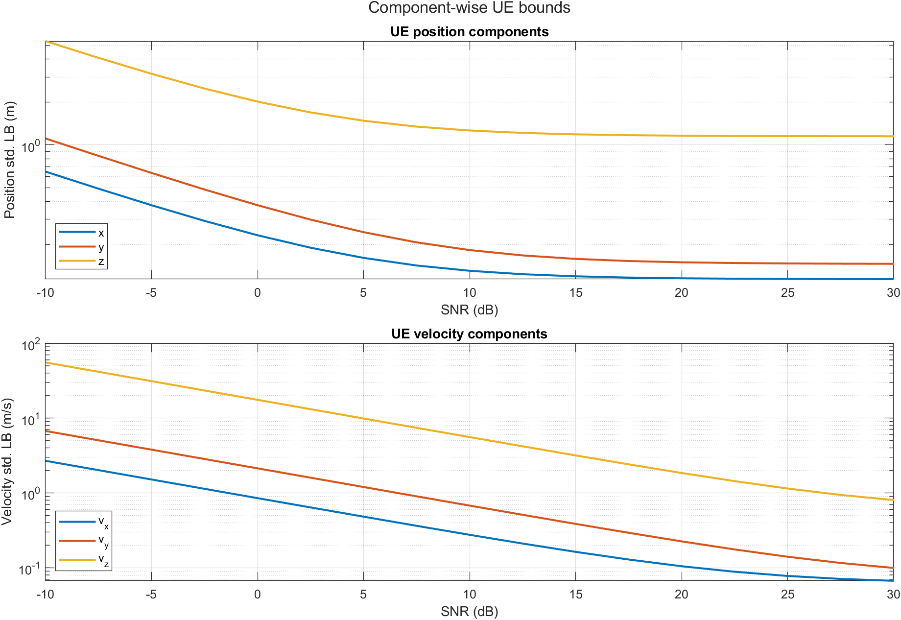
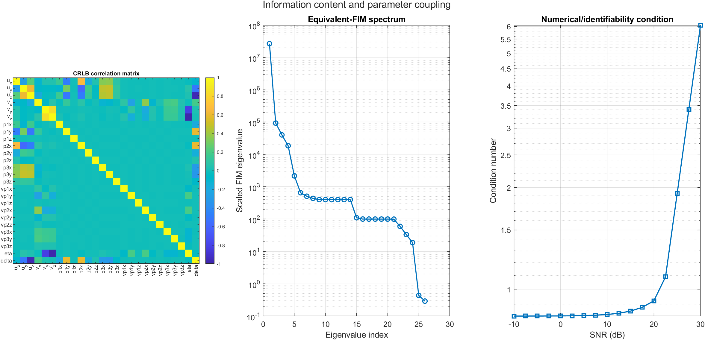
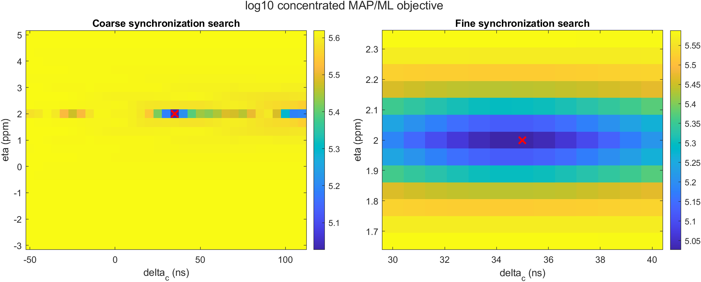
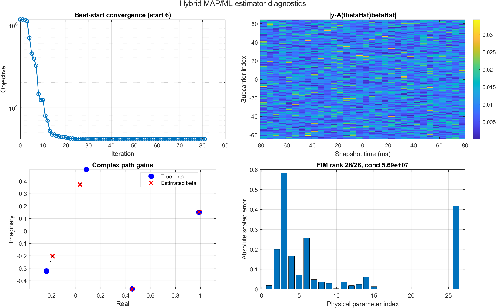
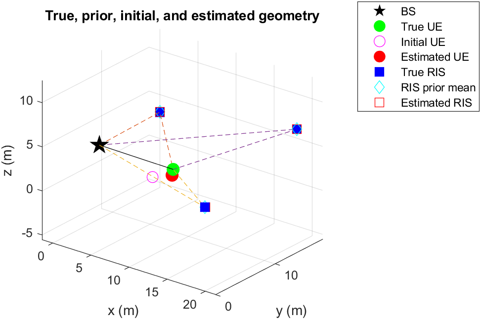

RIS-Aided Localization & Synchronization under Uncertain RIS Geometry
Reconfigurable intelligent surfaces (RISs) can serve as extra anchors for locating a user, but only if we know where they are. This project builds the RIS position uncertainty into the signal model, the Cramér–Rao bound and the estimator, and estimates the user’s position, velocity, clock offset and frequency error together with the RIS states from OFDM pilots.
Bounds: three RISs, SNR = 20 dB, RIS prior σp = 0.1 m. The estimator figure comes from a different geometry and a single noise realization, so it is not comparable with the bound.
An RIS is a flat panel of many small elements whose reflection can be programmed. Placed around a room or a street, it adds controllable reflected paths between a base station (BS) and a user (UE), and every reflected path is a new geometric measurement for localization. The catch is that the RIS then acts as an anchor: an error in where it is assumed to be becomes an error in where the user is estimated to be. Surveying, installation, vibration and calibration all leave the real RIS position, and even its motion, a little different from the nominal value.
Two easy shortcuts both fail. Assuming the RISs are perfectly known gives over-optimistic bounds and biased estimates; treating their positions as completely unknown adds so many unknowns that the problem can become unidentifiable. This project takes the middle ground: the RIS states have a Gaussian prior, and the UE, the synchronization errors and the path gains are ordinary unknowns. It answers two questions: what accuracy is achievable at best (a hybrid Cramér–Rao bound), and how to build an estimator that uses the RIS prior without inventing priors for anything else (a hybrid MAP/ML estimator).


Simulation settings
- RISs (reflected paths) K
- 3
- Subcarriers N
- 129 (−64 … 64)
- Subcarrier spacing Δf
- 480 kHz
- Occupied bandwidth
- ≈ 62 MHz
- Snapshots L, interval Ts
- 32, 5 ms
- Observation window
- −77.5 … 77.5 ms
- Complex samples NL
- 4128
- SNR
- 20 dB (sweep −10 … 30)
- RIS prior σp, σv
- 0.1 m, 0.05 m/s
- True η, δc
- 2 ppm, 40 ns
- Unknowns
- 26 physical + 8 gain
Code
- Language
- MATLAB R2024a
- Optimizer
- fmincon (SQP)
- Random seed
- 42
What sets the user’s position error
The two sweeps of the bound package, on the scenario map. Raising the SNR shrinks the user’s error circle until it stops at about 1.16 m; loosening the RIS prior grows it almost in proportion. Both curves are the project’s computed bounds, not a model: the explorer only looks them up.
RIS prior fixed: σp = 0.1 m, σv = 0.05 m/s per axis.
Violet circle: radius equal to the UE PEB, drawn to the map’s scale. Dashed teal circles: radius equal to each RIS’s position bound. The PEB is one number (the root of the summed variances); most of it is vertical, which a top view cannot show.
One effective delay per path and snapshot
The BS sends known OFDM pilots on N subcarriers in L snapshots. Path 0 is the direct BS–UE path; path k goes from the BS to RIS k and on to the UE. Each RIS creates one effective reflected path whose internal array response and phase profile are absorbed into its complex gain βk, so the model concentrates on position, motion and synchronization. The UE and the RISs move at constant velocity, and the snapshot times are centred around zero, which reduces the numerical coupling between initial position and velocity.
Propagation delay, the change of the path length over time, the frequency error η of the UE oscillator and the clock offset δc all act on the same phase. They are gathered into one effective delay:
The estimator never sees these effects separately, only through al,k. Many subcarriers resolve delay; many snapshots reveal the rate terms, which is the only way to tell the clock offset (a constant shift) from motion and frequency error (shifts that grow with time). Stacking all 4128 samples gives
This relation carries the whole project. A depends nonlinearly on geometry and synchronization, but the model is linear in the path gains, so for a fixed θ the best β has a closed form. The bound and the estimator both exploit that.
Unknowns for K = 3
- UE position, velocity
- 3 + 3
- Frequency error, clock offset
- 1 + 1
- RIS positions, velocities
- 9 + 9
- Physical parameters θ
- 26
- Path gains β (real + imag.)
- 8
- Total
- 34
A bound that keeps the RIS uncertainty
The Fisher information matrix (FIM) measures how much the data say about each parameter; its inverse is the Cramér–Rao bound, the smallest covariance any locally unbiased estimator can reach. Because part of the parameter vector is random (the RISs, with a prior) and part deterministic, the framework is hybrid: the data information is computed for all parameters, and the prior adds information only to the RIS blocks.
The report insists on treating three kinds of parameter differently, and getting this right is what makes the bound honest:
Not in the unknown vector at all.
Kept in the vector with the prior added. Dropping them would hide their effect on the UE and give a bound that is too optimistic.
Removed with a Schur complement, not by deleting rows and columns, which would amount to assuming the gains are known.
At 20 dB the user’s position bound is 1.176 m and its velocity bound 1.864 m/s. Every RIS bound equals √3·σ exactly: 0.173 m and 0.087 m/s. The observations do not noticeably reduce the RIS uncertainty in this configuration; the prior dominates those blocks, and the data are used to locate the user.
Bounds at 20 dB
- UE position (PEB)
- 1.176 m
- UE velocity (VEB)
- 1.864 m/s
- Frequency error η
- 0.00146 ppm
- Clock offset δc
- 0.985 ns
- Each RIS position
- 0.173 m = √3·σp
- Each RIS velocity
- 0.087 m/s = √3·σv
Over the sweep −10 → 30 dB
- UE PEB
- 5.506 → 1.165 m
- UE VEB
- 55.94 → 0.811 m/s
- η bound
- 0.0433 → 0.000655 ppm
- δc bound
- 4.586 → 0.976 ns






What limits the accuracy
The RIS prior is part of the error budget. Sweeping the RIS position prior from 0.02 m to 0.5 m (velocity prior scaled with it) raises the user’s position bound from 0.288 m to 5.822 m, roughly in proportion (11.6 to 14.4 times σp). Calibrating the RISs better can matter as much as adding power: the prior is not a regularization detail, it decides the result.
Height is the weak direction. Per axis, the 20 dB position bounds are 0.116, 0.150 and 1.161 m, and the velocity bounds 0.105, 0.225 and 1.847 m/s. The three RISs surround the user horizontally but sit only 3–6 m high, with the BS at 5 m and the user at 1.5 m, so there is little geometric diversity in z. No amount of SNR fixes this.
An error floor. Position-type bounds stop improving at high SNR: the PEB levels off near 1.16 m and the clock-offset bound near 0.98 ns, held up by the RIS uncertainty and by the coupling between delays. Rate-type bounds keep improving thanks to time diversity across the 32 snapshots.
Full rank is not enough. The equivalent FIM has rank 26/26 and the full FIM 34/34, so every parameter is locally identifiable. Its condition number is 9.25×10⁷ at 20 dB, rising to 6.1×10⁸ at 30 dB: some directions carry far less information than others, which makes the problem sensitive to noise, scaling and the starting point.
| σp (m) | σv (m/s) | UE PEB (m) | UE VEB (m/s) |
|---|---|---|---|
| 0.02 | 0.010 | 0.288 | 1.773 |
| 0.05 | 0.025 | 0.606 | 1.793 |
| 0.10 | 0.050 | 1.176 | 1.864 |
| 0.20 | 0.100 | 2.334 | 2.124 |
| 0.50 | 0.250 | 5.822 | 3.431 |
Per-axis UE bounds at 20 dB
- Position x / y / z
- 0.116 / 0.150 / 1.161 m
- Velocity x / y / z
- 0.105 / 0.225 / 1.847 m/s
Conditioning
- Rank, equivalent / full FIM
- 26/26, 34/34
- Condition number, 20 dB
- 9.25×10⁷
- Condition number, 30 dB
- 6.1×10⁸






Using the prior only where it exists
The estimator follows the same split as the bound: maximum a posteriori for the RIS states, which have a prior, and maximum likelihood for the user, the synchronization and the gains, which do not.
- Variable projection. For any θ the gains are a least-squares fit, β̂ = A†y, so they are removed from the search analytically: eight real unknowns fewer in a nonlinear problem. The 4128 × 4128 projector is never formed; the residual is computed directly.
- Scaling and bounds. Metres, ppm and nanoseconds differ by up to nine orders of magnitude, so the optimizer works on scaled variables inside physical bounds and a local box around each start.
- Coarse-to-fine synchronization. Most local minima come from η and δc, so they are first found on a 25 × 33 grid and then a 13 × 13 grid, refitting the gains at every point.
- Multi-start SQP. Random starts around the initial guess are ranked by cost and the best eight are refined with constrained SQP (fmincon, up to 600 iterations each).
In the saved run the grid search lowered the cost from 407 890 to 106 313 and moved the start from (1 ppm, 30 ns) to (2 ppm, 35 ns). All eight starts reached the same final cost, 4123.258. The data part of it, divided by the 4128 samples, is 0.999 per sample: the residual looks exactly like the assumed noise.
One run, SNR 20 dB
- UE position error
- 3.212 → 0.617 m
- UE velocity error
- 0.245 → 0.314 m/s
- η error
- 0.000136 ppm
- δc error
- 0.418 ns
- Gains β₀, β₁ error
- 0.0025, 0.0018
- Gains β₂, β₃ error
- 0.130, 0.129
- Normalized residual
- 0.999 per sample
- Starts at the same cost
- 8 / 8
- Local FIM
- 26/26, κ 5.7×10⁷
| Parameter | True | Initial | Estimate | Error | Local std bound |
|---|---|---|---|---|---|
| ux (m) | 8.000 | 7.800 | 8.019 | 0.019 | 0.137 |
| uy (m) | 10.000 | 6.800 | 9.800 | −0.200 | 0.219 |
| uz (m) | 1.500 | 1.700 | 0.916 | −0.584 | 1.048 |
| u̇x (m/s) | 1.200 | 1.000 | 1.367 | 0.167 | 0.311 |
| u̇y (m/s) | −0.400 | −0.300 | −0.470 | −0.070 | 0.191 |
| u̇z (m/s) | 0.100 | 0.000 | 0.357 | 0.257 | 0.850 |
From estimator/hybrid_map_results/physical_parameters.csv. Height again contributes most of the error. The estimate of uy is exactly 9.8 m, the edge of the local search box (6.8 + 3 m), with the true 10 m outside it: part of that error comes from the box, not from the data. The velocity error grew in this run, which a single realization does not contradict but cannot explain either.






Results and limits
| Part | Quantity | Value | Source file |
|---|---|---|---|
| Hybrid bound, 20 dB | UE position error bound | 1.176 m | summary_bounds.csv |
| UE velocity error bound | 1.864 m/s | summary_bounds.csv | |
| Frequency error / clock offset | 0.00146 ppm / 0.985 ns | summary_bounds.csv | |
| Each RIS position / velocity | 0.173 m / 0.087 m/s | summary_bounds.csv | |
| FIM rank, condition number | 26/26, 9.25×10⁷ | crlb_results.mat | |
| Prior sweep, 20 dB | UE PEB at σp = 0.02 m | 0.288 m | prior_sensitivity.csv |
| UE PEB at σp = 0.5 m | 5.822 m | prior_sensitivity.csv | |
| Estimator, one run | UE position error | 3.212 → 0.617 m | summary.csv |
| η / δc error | 0.000136 ppm / 0.418 ns | summary.csv | |
| Normalized residual | 0.999 | summary.csv | |
| Multi-start | 8 / 8 at 4123.258 | multi_start_summary.csv |
All results are simulations. Re-running the two MATLAB packages with seed 42 in R2024a reproduces these files.
What the project showed
- The RIS map belongs in the error budget. The user’s position bound grows roughly in proportion to the RIS prior standard deviation, from 0.29 m to 5.8 m over the sweep; RIS calibration can matter as much as transmit power.
- Geometry decides which errors remain. With the RISs spread horizontally but at similar heights, the vertical axis carries most of the error, and higher SNR cannot remove it.
- Full rank does not mean well posed. Every parameter is identifiable, yet the information differs by about eight decades between directions.
- Removing the gains analytically pays off. Variable projection, a synchronization grid and multiple starts take the estimator from 3.2 m to 0.6 m, with a residual that matches the noise.
Limitations stated in the report
- Constant-velocity motion; no acceleration.
- Inter-carrier interference neglected, and path gains held constant over the block.
- The bound and the estimator use slightly different geometries, so their numbers are not directly comparable.
- The estimator is evaluated on one noise realization; there is no Monte Carlo RMSE yet.
- Local optimization: no guarantee of a global minimum, and the local box was active for uy in the saved run.
- Only one placement of the BS, the UE and the RISs was studied.